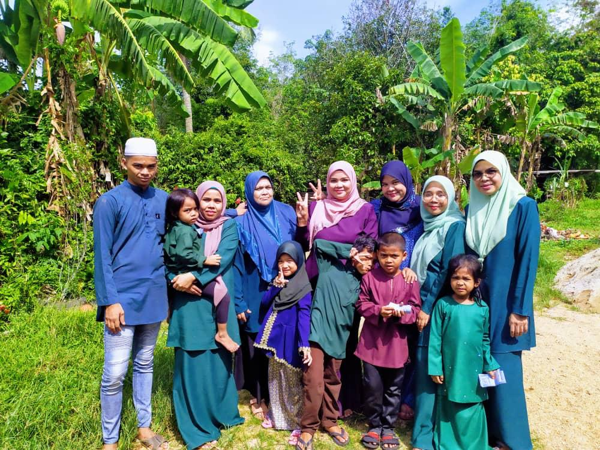
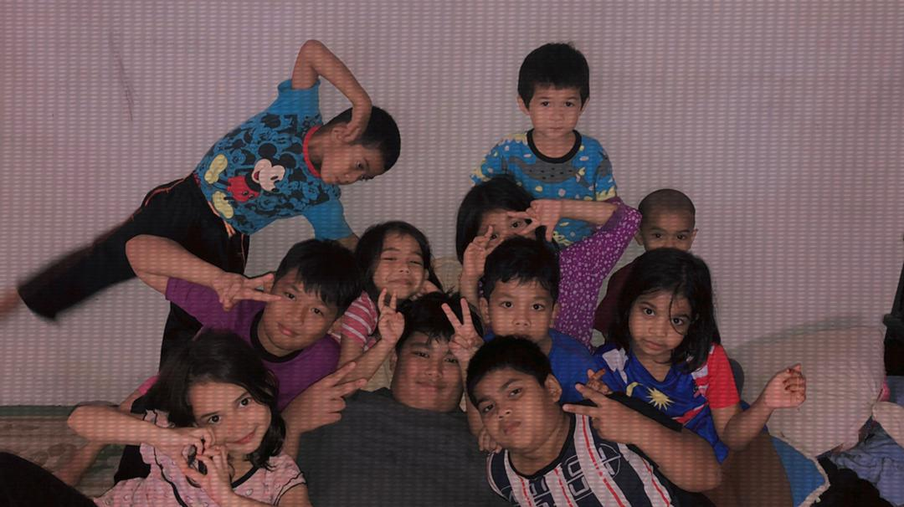
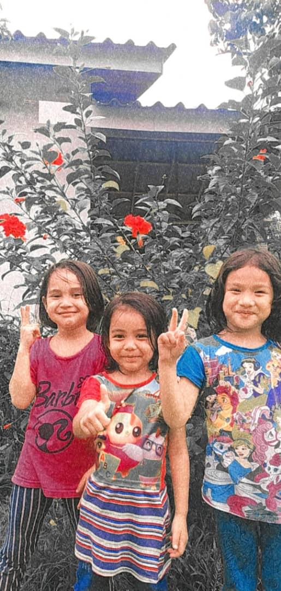
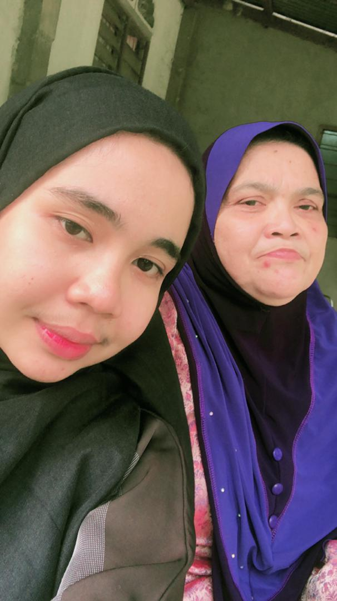
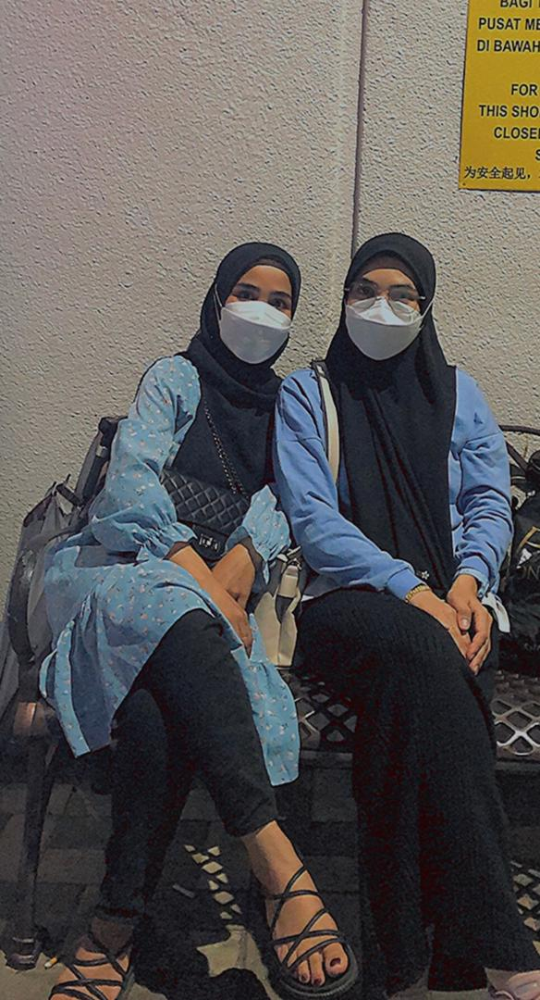

My Big Family
I have 6 siblings including me. I have 4 sisters and a brother and I am the youngest of 6 siblings.
My Cute Nephews
I have 13 nephews consisting of 9 boys and 4 girls.
My Lovely Mother
My mother name is Anisah Binti Ali. She is 57 yeras old.
My Hero
My late father name is Mat Suliman Bin Mohmad. My father past away in 2021 at the age of 61.
My Sisters
This is my first and second sister.




Copyright by Nur Afifah © 2021